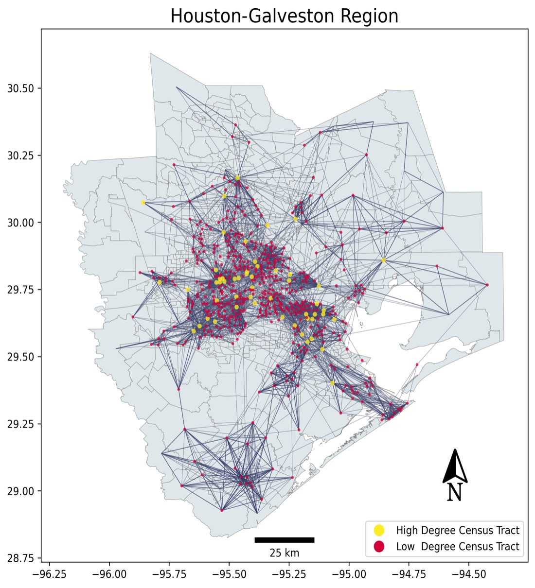

Cities & Urban Resilience
Urban resilience has become a central theme in addressing the challenges posed by climate change, rapid urbanization, and environmental risks. To support informed decision-making in this context, my research focuses on the development of urban digital twins—dynamic virtual models that simulate real-world cities under varying social, environmental, and infrastructural conditions. These digital twins go beyond traditional physical simulations by integrating vast amounts of spatial-temporal data, analytical models, and decision-making processes. By creating a comprehensive, interactive replica of urban environments, this technology allows for real-time monitoring of city dynamics and the exploration of future urban scenarios.
Meanwhile, I leverage cutting-edge methods from computer science, spatial statistics, and urban planning to address critical urban environmental issues and promote social resilience. This research involves extracting actionable insights from large-scale urban data using advanced data science techniques. By developing new geospatial models and analytical tools, my work focuses on improving the collection, processing, visualization, and analysis of urban data across diverse contexts—both in urban centers and rural areas. These tools are designed to support urban planning and management, with an emphasis on solving key social challenges such as inequality, vulnerability, and access to resources. Ultimately, my research aims to foster more resilient cities by providing innovative approaches to urban planning that prioritize sustainability, inclusivity, and adaptability.

Refereed journal articles
Yu Han, Wei Zhai, Pallab Mozumder, Cees van Westen, Changjie Chen (2024). Modeling evacuation activities amid compound hazards: Insights from hurricane Irma in Southeast Florida. Travel Behaviour and Society, 38, 100933.
Yu Han, Xinyue Ye, Kayode Atoba, Pallab Mozumder, Changjie Chen, Bastian van den Bout, Cees van Westen (2024). Retreat from flood zones: Simulating land use changes in response to compound flood risk in coastal communities. Cities, 149, 104953.
Wei Zhai, Mengyang Liu, Yu Han (2024). Dynamic neighborhood isolation and resilience during the pandemic in America's 50 largest cities. Cities, 153, 105260.
Yu Han, Liang Mao, Xuqi Chen, Wei Zhai, Zhong-Ren Peng, Pallab Mozumder (2021). Agent-based Modeling to Evaluate Human–Environment Interactions in Community Flood Risk Mitigation. Risk Analysis, 46, 101321.